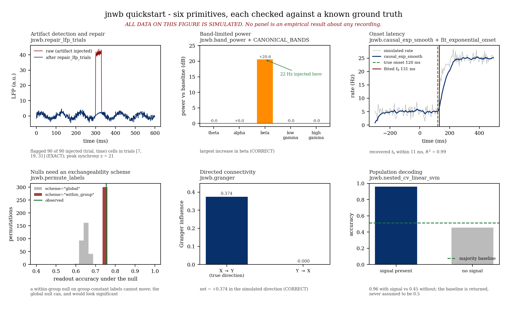

Quickstart¶
Study electrophysiology and NWB 2.0+ datasets — trial-level artifact repair, time-frequency dynamics, directed information flow, single-unit spiking latencies, and cross-modal representational similarity — with dataset-agnostic, mathematically verified algorithms.
Documentation tracks the
devbranch public contract. Every primitive operates on array representations or NWB structures without experiment-specific assumptions.
Install & Import¶
pip install jnwb
import jnwb
import numpy as np
Which Workflow Should I Use?¶
Pick the appropriate pipeline module for your analytical question:
| Goal | Primary Module | Core Function / Class | Output Type |
|---|---|---|---|
| Trial QC & Cleaning | jnwb.artifacts |
repair_lfp_trials |
Tuple[ndarray, float, dict] |
| Spectral Dynamics | jnwb.tfr |
complex_tfr, compute_psd |
ComplexTFR, Tuple[ndarray, ndarray] |
| Directed Interaction | jnwb.directed |
phase_slope_index, granger |
DirectedResult |
| Spiking & Latencies | jnwb.spiking |
raster_psth, fit_exponential_onset |
Tuple[ndarray, ndarray, ndarray], dict |
| Hypothesis Testing | jnwb.stats |
paired_fire_prob_test, permute_labels |
dict |
| Representational Geometry | jnwb.jrsa |
jrsa |
JRSAResult |
Canonical 6-Panel Visual Architecture¶
The jnwb quickstart tour exercises six foundational primitives simultaneously on a controlled signal whose ground truth is known, rendering a unified diagnostic multi-panel figure.

Run the complete quickstart script locally:
python examples/quickstart_jnwb.py
Step-by-Step Tour¶
1. Artifact Detection & Repair¶
Detect and interpolate high-amplitude transients across multichannel LFP arrays without corrupting unaffected channels or neighboring time windows:
rng = np.random.default_rng(0)
n_trials, n_ch, n_t = 40, 8, 600
t = np.arange(n_t)
seg = rng.normal(0, 1, (n_trials, n_ch, n_t))
seg += 2.0 * np.sin(2 * np.pi * 10 * t / 1000.0)
# Inject synchronous transient artifact on specific trials
for trial_idx in [7, 19, 31]:
seg[trial_idx, :, 300:330] += 40.0
repaired, frac, diag = jnwb.repair_lfp_trials(seg, times_ms=t, z_thresh=6.0)
print(f"Repaired fraction: {frac:.1%}")
2. Time-Frequency Dynamics (Complex Morlet TFR)¶
Extract phase and power with single-trial resolution using Morlet wavelets:
freqs = np.linspace(6.0, 45.0, 30)
tfr = jnwb.complex_tfr(repaired[0], fs=1000.0, freqs=freqs, n_cycles=5.0)
print(f"TFR shape (channels, freqs, time): {tfr.shape}")
print(f"Mean raw power: {tfr.power.mean():.4f}")
3. Directed Information Flow (Phase Slope Index)¶
Compute robust, phase-slope directionality between two time series with phase-randomized surrogate significance testing:
sig_a = rng.normal(size=1000)
sig_b = np.roll(sig_a, 5) + 0.5 * rng.normal(size=1000)
psi = jnwb.phase_slope_index(sig_a, sig_b, fs=1000.0, freq_range=(8.0, 30.0), n_surrogates=50, seed=0)
print(f"PSI Score: {psi.score:.4f}, p-value: {psi.p_value:.4f}")
4. Spiking PSTH & Onset Dynamics¶
Calculate peristimulus time histograms with bootstrap confidence intervals and fit parametric latency models:
spk_times = np.sort(rng.uniform(0, 10, 200))
event_onsets = np.array([1.0, 3.0, 5.0, 7.0])
time_bins, rate, sem = jnwb.raster_psth(spk_times, event_onsets, win_ms=(-100.0, 400.0), bin_ms=10.0)
onset_fit = jnwb.fit_exponential_onset(time_bins, rate, t0_bounds=(0.0, 250.0))
print(f"Estimated latency t0: {onset_fit['t0']:.2f} ms (status: {onset_fit['bound_status']})")
5. Non-Parametric Statistical Testing¶
Evaluate trial-level event comparisons using stratified shuffle permutations:
fires_cond_a = np.array([True, True, False, True, False, True, True, False])
fires_cond_b = np.array([False, False, False, True, False, False, False, False])
stat_res = jnwb.paired_fire_prob_test(fires_cond_a, fires_cond_b, n_shuffles=500, rng=rng)
print(f"Empirical delta: {stat_res['delta_fire_prob']:.3f}, p-value: {stat_res['p_value_fire_shuffle']:.4f}")
6. Joint Representational Similarity (jRSA)¶
Compare multi-condition activity patterns across modalities, areas, or models:
# Activity tensor: (conditions, channels, time)
X = rng.normal(size=(6, 16, 50))
Y = X + 0.3 * rng.normal(size=(6, 16, 50))
jrsa_res = jnwb.jrsa(X, Y, metric="rsa", stats=True, n_permutations=100)
print(f"jRSA alignment: {jrsa_res.value:.4f}, p-value: {jrsa_res.p_value:.4f}")